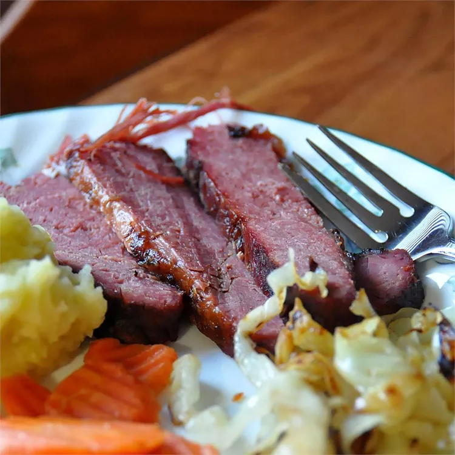

Braised Corned Beef Brisket

What Is Corned Beef Brisket?
Corned beef is a beef brisket (a cut of meat from the breast or lower chest) that has been cured in a salt
solution. "Corning" results in intensely flavorful, super tender meat. In this recipe, the corned beef brisket
is seared in a hot skillet and then braised all day with garlic and onions for a melt-in-your-mouth texture and
perfect flavor.
- 1 (5 pound) flat-cut corned beef brisket
- 1 tablespoon vegetable oil
- 6 cloves garlic, sliced
- Preheat oven to 275 degrees F (135 degrees C).
- Discard any flavoring packet from corned beef. Brush brisket with browning sauce on both sides.
- Heat vegetable oil in a large skillet over medium-high heat and brown brisket on both sides in the hot oil,
5 to 8 minutes per side.